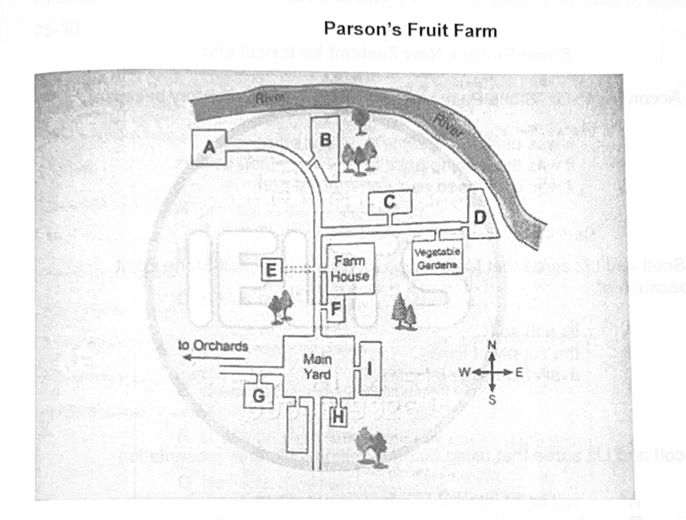

Phiếu trả lời Listening
Bấm số câu để nhảy tới câu đó. Bài làm được tự lưu trên máy này. Thời gian thi thật: khoảng 30 phút.
PART 1 Questions 1–10
Complete the form below.
Write ONE WORD AND/OR A NUMBER for each answer.
Booking a residential workshop
Course required: drama workshop
Full name of participant: Jan
Previous course attended: Writing for the
Address: 20, Gregory
Current occupation:
Date chosen course begins:
Estimated arrival time: pm
Special dietary requests: no products
Preferred afternoon course: work
First source of course information:
Pre-course material requested: the mentioned in the publicity
📜 Lời thoại Part 1
Now turn to part 1 on page 2 of your question booklet.
Part 1 You will hear a woman called Jan telephoning a man about booking a place on a residential workshop.
First you have some time to look at questions 1 to 5.
Now listen carefully and answer questions 1 to 5.
Hello, Creative Center. Hello there. I'm phoning to book a place on your next two-day drama workshop. Okay. Let me just check.
Yes, we've still got room on that course. Great.
Can I have your full name? Yes, it's Jan Creswick. Uh, that's C-R-E-S-W-I-C-K. Thanks Jan. And are you coming on your own?
Yes. And have you done any of our courses before? Yes, I did one a couple of years ago. Great. So you may be on our computer records.
Which course did you do? The writing for the theater course? Okay.
Right. Yes, here we are. Oh, so that's 20 Gregory Avenue.
. Gregory place, actually. Okay, I'll correct that on the computer. Uh-huh. And can I ask if you work?
Yes, I want to be an actor, but I'm working as a waitress at the moment. After this course, who knows? Right, back to the paperwork. So, we're enrolling you on the two-day course that starts tomorrow, the 30th of May. Oh, sorry?
No, on the 13th of June. I meant the one starting in two weeks. Is that still all right? Oh, that's fine.
Before you hear the rest of the conversation, you have some time to look at questions six to ten. Now listen and answer questions six to ten.
Can you tell me something about accommodation? Yes. People usually come the evening before the course starts. The cost of the course includes accommodation. for two nights. Well, I'll make sure I'm there in good time so I can meet the others that evening and settle in.
Is 5.30 too early to arrive? No, that's fine. And you'll finish no later than 5 o'clock on the last day?
Okay. Right. Just a few other things. Any dietary information we should know, all the food is provided, and we use organic produce as often as we can. Oh, that sounds great.
But I don't eat anything that's made from milk. I know that can be difficult. It's not a problem. What about meat? Do you eat that?
I don't need much of it, but that's fine. You don't need to note that. Sure? Yes. Hey, I am really looking forward to this.
Great. I don't know if you know this, but we may divide into two groups in the afternoon if we have more than 16 people on the course.
If we do that, there'll be a choice of doing comic, or what we call classic work. Oh, I'd always go with comedy. I'm much more interested in that.
Now, how did you find out about this course? Was it the adverts in the Sunday newspaper? No. In fact, I looked for drama courses on the internet, and I saw that you were doing one. When I read about it, I just thought, hey, why not?
Okay. I saw that you send out some pre-course material. Yes. I don't have much time to read any of the books you're recommending, but I'd be grateful for your leaflet, the one you mentioned in your publicity. Sure.
I'll put a copy in the post here. Thanks a lot. I can't wait.
PART 2 Questions 11–20
Questions 11–15
Choose the correct letter A, B, or C
Working at Parson’s Fruit Farm
11 What does the manager say about accommodation?
12 The weather this summer has been
13 The manager says that tractor drivers
14 Working inside the shed
15 What final advice does the manager give?
Questions 16–20
Label the map below.
Write the correct letter, A-I, next to questions 16-20.
Parson’s Fruit Farm

16 Workshop
17 lunchroom
18 Farm Office
19 First Aid Room
20 Store Shed
📜 Lời thoại Part 2
Part 2.
You will hear a farm manager talking to a group of people who are starting work at a fruit farm.
First you have some time to look at questions 11 to 15.
Now listen carefully and answer questions 11 to 15.
Well, hello everyone and welcome to Parsons Fruit Farm. It's good to see a mix of so many different nationalities who have all come here on their working holidays.
farm. First of all, just a few words about accommodation. I know that some of you have pitched your tents down at the campground, but are looking for something more comfortable. So one option is the motel. It's located very conveniently, just a few minutes away, and they often do reduce rates if you're staying long-term.
And then the backpackers' hostel is always very popular, though it can be busy at this time of year. Okay. So, the work itself.
This summer the weather's been pretty mixed. We've had a bit of everything and the forecasts have always been wrong. So some of the apples and pears aren't in great condition.
That said, this season's been better than some we've had recently. And the autumn looks like it's going to be great. So we should have ideal conditions for the harvest.
So, there are a number of different jobs to do. Most of you will be fruit picking. We'll give all the fruit pickers gloves to wear to protect your fingers so you won't hurt yourselves.
We'll also be looking for some tractor drivers. Their job is to collect the full baskets of fruit and take them to the shed. I should say, in this country, anyone is allowed to drive a tractor on farmland once they're 13, rather than 18 as in some countries.
However, we do have certain rules that are specific to our farm.
You don't need to have done farm work before. But here you must have a relevant document or permit from your country that allows you to operate this type of vehicle.
Then there are also lots of jobs working inside the shed. This involves sorting the fruit and cleaning it if necessary. There's a lot of heavy machinery in the shed so when that's operating you must wear your ear protection. The big advantage is the shed's fully air conditioned so it's a pleasant environment regardless of what the weather's doing outside. All right well whatever job you do I'll just give you some final advice.
When you're picking the fruit sometimes you can break off a small branch. That's not something you need to be worried. It'll grow back. Also, remember to have snacks and use your water bottles often. People get exhausted quickly during harvest time.
And if you've got a mobile or cell, keep it with you at all times, in case there's an emergency.
Before you hear the rest of the talk, you have some time to look at questions 16 to 20. Now listen and answer question 16 to 20.
All right, I'd like to quickly go over where everything is located. So look at your maps of Parson's fruit farm and find the main yard. It's towards the bottom of your maps.
That really is the centre of the farm.
Okay, the first place I'll mention is the workshop. This is close to the main yard. But you actually have to leave the yard to get into it. So you need to take the road that goes out to the orchards and you access the workshop from there. Then the lunchroom.
On the north side of the map there's a road that curves sharply round to the left. Halfway around this bend you'll find the entrance to the lunchroom. It's a pretty place next to the river and also beside the road. little wood. You also need to be able to find the farm office. So, if you look at the main yard, you'll see there's a number of different buildings located around it.
And the farm office is the smallest one. It's on the south side. Obviously, the first aid room is important.
Now, this is close to the main yard, so it's quick to get there. And it's actually more or less in the middle of your maps. That little building that's attached to the farmhouse. Then the store shed. From the main yard take the road heading north.
Go past the farmhouse and turn right. The store is down that road. If you come to the vegetable gardens, you've gone too far. Now the other thing is the farmhouse is further than you'd expect.
That is the end of part two. You now have 30 seconds to check your answers to part two.
PART 3 Questions 21–30
Questions 21–24
Choose the correct letter A, B or C
Stone Point: a New Zealand historical site
21 According to Liz, Stone Point played a key role in local history because
22 Scott and Liz agree that Maori originally chose to inhabit Stone Point because of
23 Scott and Liz agree that using Maori terminology in their presentation
24 When Scott mentions the engines at Stone Point. Liz advises him to
Questions 25–30
What do Liz and Scott agree they must do for each of the following sections of their presentation on Stone Point?
Choose SIX answers from the box and write the correct letter, A-H, next to questions 25-30
Things to do
A provide further description
B find images
C set up an interview
D check authors details
E check the exact location
F obtain official permission
G be more objective
H reduce it in length
Sections of Presentation
25 Early Maori inhabitation of Stone Point
26 The use of Stone Point as a lookout point
27 The reconstruction of the fort
28 Modernisation of the fort in the 1930s-40s
29 Uses of Stone Point from 1950s to the present day
30 The use of Stone Point as a public park
📜 Lời thoại Part 3
Section 3.
You will hear part of a discussion between two students, Liz from New Zealand, and Scott from the UK, who are working on a presentation about a key historical site in New Zealand. First, you have some time to look at questions 21 to 24, on page 5.
Now listen carefully and answer questions 21 to 24. Hi Scott, here are my notes. Let's sort this presentation out then. The first thing I found out about Stone Point is it's an extinct volcanic cone. You probably know that already being in New Zealander?
Yes, and there are two other cones nearby, which also overlook the harbour. Right. Yeah, the first settlers of New Zealand, the Maori, sailed to New Zealand thousands of years after these volcanoes erupted.
points significant historical role. It's been used by both Maori and European settlers as a place to shelter from attack or launch in attack for centuries. Yeah, and the fact it was an ideal place for building a village, it would have been quite a sheltered spot. I suppose the Maori settled there because they thought the volcanic soil would help their crops grow. Well, they would have realised the benefits of the soil after a few good harvest, but initially the fishing opportunities would have been the attraction.
You're right.
Actually, I also read that Maori regards Stone Point as Talna? I believe that means a treasured thing. Well, your Maori vocabulary is improving, Scotch.
We do have to deal with Stone Point's cultural value for Maori. That's still part of its historical significance. But we need to keep most Maori terminology out of the presentation. Otherwise, a lot of the international students won't be able to follow us. That's a shame, I'm sure they'd be interested.
I mean, I am, but yeah, we wouldn't be able to explain it in the time allowed, so I guess we have to stick to English.
Anyway, European migrants turned Stone Point into a lookout point for ships. Then it became a fort, an army base in the late 1880s, and then during the World Wars, the fort was modernised again. It's also been a public park sometimes. I'd prefer to devote more of the presentation to the military use of Stone Point. There are some great websites about the engines they installed.
Sorry, I wouldn't go into the technical side if I were you. If you start describing mechanical stuff, people will switch off. I think it's more interesting to look at the impact Stone Point had on the people's lives at the time. I mean, for example, there were about 25 years when they used local prisoners to build the tunnels and the underground rooms. They lived there too.
Yeah, I guess, if we can find some first-hand accounts.
Before you hear the rest of the discussion, you have some time to look at questions 25 to 30 on page 6.
Now listen and answer questions 25 to 30.
Okay, so let's make a checklist of things to do. For the early Maude and habitation section, we have to look at the material we've used again and make sure we know who the writers were and when they wrote it. Yes, that needs work. And for the part about Stone Point being used as a lookout point, I'm sure we can locate some drawings of how Stone Point looked then and the kind of ships coming in. Nice.
And what else?
. . We haven't got a lot of detail for the reconstruction of the fort. We should add some more information about what it was the prisoners were adding to it. Okay, I'll do that bit too. So I'll deal with the section regarding the modernization that happened in the 1930s and 40s.
I mean, that's a bit where we have the most visible evidence of historic buildings.
I'll ring the Department of Conservation and see if they'll agree to let me film the site. Maybe allow me access to some of the tunnels or public don't see.
for the 1950s onwards could you also arrange a meeting with someone from the Department of Conservation to ask them about their restoration work? I could try. Oh and just about its use as a public park today. Where is the boundary exactly? Does it go all the way to the beach?
Not sure. I'll check that out. great. I suppose it would finish off the presentation nicely if we explain the future plans for the site.
That is the end of section 3. You now have half a minute to check your answers.
Now turn to section 4 on page 7.
PART 4 Questions 31–40
Complete the notes below
Write NO MORE THAN TWO WORDS for each answer.
Jatropha : a new biofuel
Plant facts
The plant jatropha
is originally from Central America
can grow in poor
can survive for several years
can stop of land
Its seeds
can be used to produce diesel oil
produce far more fuel than soybean or
leave a residue after processing-used to make electricity
produce energy which is renewable. unlike fossil fuels
Uses of jatropha in Africa
for water pumps and fridges
made into
used as fencing
the are boiled and used to treat malaria
for problems with
European companies’ claims about jatropha
It could help stop poverty among rural populations
It could be used in current diesel engines
The plants use up lots of
Problems with jatropha
some seeds are toxic to people and animals
unreliable oil productivity
Other criticisms of biofuels
Widespread production of biofuels could result in
high food prices in poor countries
environmental damage caused by loss of rainforest and
adding to the problem of
📜 Lời thoại Part 4
Part 4. You will hear an environmental science lecture about a plant called jatropha and its uses.
First you have some time to look at questions 31 to 40.
Now listen carefully and answer questions 31 to 40.
Good afternoon. As you know, the world is running out of fossil fuels, that is crude oil, coal and natural gas. As an alternative, certain plants are now being considered as biofuels, which are fuels made from organic plant material. These are possible sources of energy once the fossil fuels have gone forever.
Well, one such plant goes by the name of jatropha. It was first a native of Central America, and it's now found across the world. A few things that make this plant especially attractive is that it can survive in very poor quality soil. As it does, for example, alongside train tracks in India, on the line between Mumbai and Delhi. And for up to three years, it's resistant to drought.
That's right, it can do without rain for that long. And even if it's not actually a plant that people can eat, it's still worth having it on your land, as it prevents erosion.
And we looked at the dangerous consequences of that in a previous lecture. Furthermore, jatropha seeds can be slowly distilled to produce diesel oil and it's this kind of fuel, of course, that's of interest to scientists and power companies.
After processing, the seeds can yield up to four times the oil that soybean can and ten times the amount compared to corn. So you can see why it's causing such interest. And not much is wasted in the processing procedure either. After the oil has been extracted from the seeds from the seeds, the is processed into biomass which can run power stations which in turn can provide electricity for thousands of local homes. Also, whereas our fossil fuels cannot be replaced, the energy produced by biofuels such as jatropha is renewable.
It's not going to run out because the plants just go on growing.
There's no doubt that it is a remarkable plant and one that has been very beneficial to men. In various African communities, it's been used to operate water pumps and refrigerate medicines. It can be used to produce candles or as a fencing plant to keep some animals enclosed and some animals out. It can also treat a number of health problems, for example, the boiled leaves can do much to relieve the suffering of people with malaria, and some jatropha species have seeds which are used to treat digestion problems. Anyway, that's not what the European corporations who are buying vast amounts of land for jatropha plantations are focusing on.
They claim that people who are dependent on rural economies will benefit from growing jatropha and that it will help them bring an end to poverty by providing a long-term local industry. They also point out that few or no modifications would be in modern diesel engines since they were originally designed to run on bio-opious fuels, such as peanut oil and ethanol anyway. Of course, when the plants are burnt, they release carbon dioxide, but they absorb great amounts when they're growing, making them a considerably greener alternative to fossil fuels.
But not everyone shares the excitement over jatropha, nor other biofuels. In Western Australia, jatropha has in fact been banned since the seeds of some species are toxic, and it only takes three or four to kill a person, and animals are also very vulnerable.
Furthermore, skeptics also point out that as there are many species of jatropha, its oil productivity is unreliable. Aside from this, critics of jatropha and other biofuels claim that farmers now have a strong economic incentive to grow them rather than food crops. Poor countries would be particularly affected because they would have to rely on imported foods to survive, up having to pay greatly inflated prices for basic foods.
There's also the concern over environmental damage. In order to provide land for palm oil or sugar cane plantations, for instance, companies are cutting down vast areas of rainforest which can never be replaced, and thus in turn results in the disappearance of wildlife which depended on that habitat. You can also imagine that such deforestation makes a considerable contribution to global warming.
Furthermore, opponents also reject the idea that biofuels are a carbon-neutral source of energy.
That is the end of Part 4. You now have one minute to check your answers to Part 4.
Phiếu trả lời Reading
Bấm số câu để nhảy tới câu đó. Bài làm được tự lưu trên máy này. Thời gian thi thật: 60 phút.
READING PASSAGE 1 Questions 1–13
You should spend about 20 minutes on Questions 1–13, which are based on Reading Passage 1 below.
The world’s first cities
The creation of Mesopotamian cities
The inhabitants of Mesopotamia - which now forms part of eastern Syria, southeastern Turkey and Iraq - lived for thousands of years on individual farms and in small, isolated communities, working relentlessly just to meet their basic needs. But then, about 6,000 years ago something remarkable happened. The people left the security of their family homes and villages and came together with others to create something far more complex and difficult: the world’s first city, called Uruk.
There is not much left now of Uruk, which is about 250 kilometres south of Iraq’s capital Baghdad, but enough does remain to show that this initial experiment in urban living was extraordinarily successful. At its height, around 5,000 years ago, Uruk was home to more than 40,000 people. The outlines of the city walls indicate an enclosed area of about 600 hectares.
The archaeological record of Uruk reveals the intensive building and rebuilding which went on for four or five centuries after the city’s initial establishment. In that period the people of Uruk built a dozen or so large public buildings. They would carefully level what had stood before, and then build another structure on top, often trying out a different building material or an innovative technique. They seemed to be searching for ways in which architecture could express the revolutionary new social structures that had come into being there.
Soon Uruk was not the only Mesopotamian city. People all across the flat plains of southern Mesopotamia were enjoying many of the benefits of city life. By about 4,500 years ago, 80 per cent of the Mesopotamian population lived in cities over 40 hectares in size, with populations of between 15,000 and 30,000 people. The emergence of these thriving communities, made up mostly of individuals and groups with no blood ties, was unprecedented in human history. Why did these extraordinary advances happen?
Reasons for the creation of cities in Mesopotamia
Smaller communities in Mesopotamia sometimes decided to come together to make it easier to defend themselves from their enemies. But the underlying reason for the creation of cities can be found in the harshness of this particular environment. The area was a place of extremes, where narrow strips of fertile river valleys were bounded by thousands of kilometres of desert and unproductive wetlands. As the small amount of rainfall in the region was incapable of sustaining anything but very limited agriculture, it was only through sophisticated irrigation that isolated pieces of land were kept fertile. The Tigris and the Euphrates rivers provided water for irrigation, and were also the basis of a communication system that led to the spread of the latest concepts in farming.
In such a region, the only way for humans to prosper was by forming groups that could work together. The threat of famine, which could be caused by a prolonged drought or the sudden change in the course of a river, forced people to look outside their families, and work with their neighbours to create an elaborate system of dams, channels and canals to manage water. These projects needed specific skills and labour from outside the farmer’s family, and this established more firmly the patterns of dependence that are at the heart of civilisation.
Changes in the organisation of farming
The intensive farming that came about in Mesopotamia was more efficient and productive and therefore generated a surplus of food, allowing crops in years of good harvests to be stored as protection against future less successful years. It also allowed more land for the production of a wider range of crops. It created a world where there was a need for traders and for skilled craftsmen: in short, it was the beginning of industry and consumerism. The concept of specialisation emerged within the population - with increasing numbers of soldiers, builders, musicians, doctors, fortune tellers - all supported directly or indirectly by agriculture. At the same time, this increased the control that powerful institutions, gradually emerging in the early cities, had over the urban population. Although large numbers of people were freed from the struggle of subsistence farming, they were now totally dependent on the institutions that employed them for their daily sustenance.
The role of the temples
The earliest and most powerful of these institutions was centred on the religious temple. Ever more temple structures were erected in the form of massive pyramids which had enormous storerooms for the output from the farming estates. Over time, the temples acquired these farms for themselves, and appointed a large number of staff to administer them and to deal with the storage of produce. The temples’ greatest advantage was that each citizen was expected to give up some time to work for the temples. This meant that temples could easily store huge amounts of agricultural produce which could be used to buy yet more land. In addition, the revenues generated allowed the temples to serve as primitive kinds of banks making loans to people in difficult economic times.
The emergence of writing
We know a surprising amount about these times thanks to the development of an important new technology: writing. In Mesopotamia basic records were inscribed in wet clay, unlike the fragile papyrus used in ancient Egypt and Greece. These first writings were largely lists of people and things, simple bookkeeping. But within several hundred years, writing systems had become more advanced capable of recording concepts as well as lists. The clay tablets used for writing were tough, and the fires that often burnt down the archives where they were stored usually merely baked them for future generations.
Questions 1–6
Do the following statements agree with the information given in Reading Passage 1?
In boxes 1-6 on your answer sheet, write:
TRUE if the statement agrees with the information
FALSE if the statement contradicts the information
NOT GIVEN if there is no information on this
1 Some physical evidence of Uruk still exists in Iraq.
2 The people of Uruk lived in large apartment buildings.
3 Builders in Uruk frequently experimented with new construction methods.
4 Urban settlements were unusual in Mesopotamia 4,500 years ago.
5 The Tigris and the Euphrates rivers were important for the interchange of ideas.
6 When there were food shortages, farmers relied mainly on the help of their relatives.
Questions 7–13
Complete the notes below.
Choose ONE WORD ONLY from the passage for each answer.
Write your answers in boxes 7-13 on your answer sheet.
Early changes in Mesopotamia
Changes in organisation of farming
Improved agricultural methods led to:
a food
being used as insurance
a wider range of crops being grown
the development of industry and consumerism
increased specialisation amongst workers
greater control by institutions
Temples
were built in the shape of large
had large where produce was kept
many needed to manage the farms
acted as in hard economic periods
The development of writing
people wrote on surfaces made of
written records remained undamaged after archives they were kept in
READING PASSAGE 2 Questions 14–26
You should spend about 20 minutes on Questions 14–26, which are based on Reading Passage 2 below.
Australia’s camouflaged creatures
Many species of animal in Australia protect themselves by using camouflage - a way of ‘hiding’ by blending into the surroundings
A Most species use camouflage to some extent. If they are convincing, they survive to pass their genes on to future generations. After generation of natural selection, animals can develop astonishingly complex camouflage techniques, manipulating shape, colour and movement. ‘The principle of camouflage is to make it economically unviable for a predator to pursue a particular species of prey.’ explains Professor Mark Elgar, of the University of Melbourne. ’Camouflage increases the search time and, as a consequence, the predator will simply target another species, either because it doesn’t see the camouflaged individual or it just finds something more obvious to do.
B The easiest way for an animal to disguise itself is to be invisible in its surroundings. To that end, stick and leaf insects have evolved complex camouflage to hide themselves from predators. Many have the texture of sticks or dry leaves, while others imitate living foliage, even the veins in a leaf. Some insects develop blemishes to match the spots caused by disease. A convincing appearance only works if its owner also acts the part, so during the day the creature using this type of camouflage keeps motionless, or sways like a dead leaf in the breeze. If disturbed, it falls to the ground and stays still. Entomologist Paul Zborowski, who has spent decades photographing inconspicuous creatures, rates the desert insects of Central Australia as the most convincingly disguised creatures he’s seen. “It’s an incredibly old habitat so the creatures have had a long time to adapt,” Zborowski explains. Most of them behave like stones and don’t move all day feeding only at night.
C A tawny frogmouth sitting motionless on a stump also illustrates the importance of pairing a persuasive costume with behaviour. Professor Gisela Kaplan of the University of New England, in Australia, says the frogmouth’s skill at camouflaging is learned behaviour. While adopting a pose may be a reflex of the bird, and can be observed in a hatchling’s first week, the ability to choose a backdrop which matches its colouration does not develop for 4-6 months. When the chicks land they are usually highly conspicuous, and their parents try to signal to them to move to a safe location.
D Fixed camouflage is only good against a relatively unchanging environment, so some animals, such as the cuttlefish, have evolved an adaptable disguise. The cuttlefish can almost instantly change its colour, pattern and texture to match its surroundings, using specialised cells and muscles. On Queensland’s reefs, scientists have been studying another ocean dweller that uses colour change, although not to blend into the surroundings. Dr Karen Cheney, from the University of Queensland, says the bluestriped fangblenny alters its colouration to mimic other species of fish, allowing it to travel with them and benefit from safety in numbers. Its most impressive impersonation is of the black-with-neon-blue striped cleaner wrasse which eats the parasites on larger fish. Not only does the fangblenny benefit from the reduced predation that comes with the wrasse’s beneficial relationships with other fish, but the disguise also lets it get closer to prey. It darts out from the safety of the wrasse’s cleaning station to nip at unsuspecting fish passing by but doesn’t attack those coming to be cleaned.
E The most famous form of mimicry, however, is for defence, not attack. Batesian mimicry refers to animals that gain protection from predators by imitating a dangerous organism, often using conspicuous colours. The nineteenth-century naturalist Henry Bates first suggested this camouflage technique after noticing that several Amazonian butterfly species looked the same. The technique was later called after him. In Australian waters, the harmless harlequin snake eel sports the same black and white bandings as the highly toxic, yellow-lipped sea krait, ensuring no predator will attack. However, the success of Batesian mimicry depends on the ratio of mimics to originals. If a predator encounters too many that are edible, it will just assume none of the animals with those markings are dangerous, explains Martyn Robinson, an educational naturalist with the Australian Museum.
F An imitation of a more dangerous creature needn’t be exact, just enough to make potential predators hesitate. The hawk moth caterpillar has markings resembling a snake’s eyes on its abdomen. When confronted, the caterpillar pulls its head in and the ‘eyes’ flash open. Whether the potential predator thinks it has seen a snake, or is simply startled is unclear, but the outcome is that the caterpillar lives to see another day.
G In Queensland’s tablelands, the chameleon gecko has another way of making predators hesitate. Its body is brown, but its tail is banded in black and white. Robinson explains that if attacked, the chameleon gecko will drop off its tail, which will wriggle around on the ground. Many lizards do this, but in the case of the chameleon gecko the tail bones actually rub against one another, so it squeaks. ‘The predator is, of course, thoroughly absorbed by this black-and-white-striped, wriggling, squeaking thing on the ground, and the gecko can sneak away,’ Robinson says. It’s a one-time-only trick: the regrown tail is brown, the same as the gecko’s body. Such precise disguise and elaborate trickery illustrate the limitless possibilities of nature. But, as Robinson points out, only the most successful illusionists are here to tell the tale.
Questions 14–18
Reading Passage 2 has seven sections, A-G.
Which section contains the following information?
Write the correct letter, A-G, in boxes 14-18 on your answer sheet.
14 a species that indicates to its young to move to a place where they are less visible
15 an instance where sound is used to help an animal escape
16 a creature that can use camouflage to match a range of different backgrounds
17 a claim that the majority of animals disguise themselves in some way
18 examples of animals that use camouflage to look like plants
Questions 19–23
Look at the following statements (Questions 19-23) and the list of people below.
Match each statement with the correct person, A-F.
Write the correct letter, A-F, in boxes 19-23 on your answer sheet.
19 one species has a camouflage tactic that is not present from birth.
20 Species that live in an ancient environment have become very effective at camouflaging themselves.
21 Part of an animal is left behind to distract predators.
22 If it takes too long to find one kind of prey, animals will look for an alternative source food.
23 Camouflage can involve copying a threatening type of animals.
List of people
A Professor Mark Elgar
B Paul Zborowski
C Professor Gisela Kaplan
D Dr Karen Cheney
E Henry Bates
F Martyn Robinson
Questions 24–26
Complete the summary below.
Choose ONE WORD ONLY from the passage for each answer.
Write your answers in boxes 24-26 on your answer sheet.
The bluestriped fangblenny
Dr Karen Cheney studies the bluestriped fangblenny on off Queensland’s coast. She found that the fangblenny was able to make itself resemble other fish by adjusting its colouration. The fangblenny impersonates the striped cleaner wrasse, a fish that is welcomed by other species as it gets rid of their The fangblenny can approach its without drawing the attention of predators or disturbing the work of the striped cleaner wrasse.
READING PASSAGE 3 Questions 27–40
You should spend about 20 minutes on Questions 27–40, which are based on Reading Passage 3 below.
The effectiveness of an online course
As access to the internet has continued to grow, web-based learning has continued to expand. With approximately half of the households in the United States (or 150 million people) connected to the internet, an estimated 2 million students are taking post-secondary courses that are fully delivered online. Millions of other students at all educational levels (primary, secondary, post-secondary) participate in online courses. However, the effectiveness of online courses, particularly in relation to individual student needs, perceptions, and student outcomes, is sometimes questioned.
Common elements for learning in a typical classroom environment are the social and communicative interactions between student and teacher, and student and student. The ability to ask a question, to share an opinion with a fellow student, or to disagree with the point of view in a reading assignment are all fundamental learning activities. However, effective web-based learning requires adjustments on the part of students and teachers for successful interactions to occur, for example. Many online courses provide students and faculty, and students and students with the ability to interact with each other via an electronic bulletin or discussion board.
While most studies show a link between interaction and satisfaction in web-based courses, some observers have cautioned that this is not always the case. Ruberg, Taylor and Moore, for example, observe that in order to interact successfully, students must adjust to the nonlinear nature of web-based learning. Typical face-to-face situations tend to be linear, focusing on a single discussion thread. Web-based learning sessions on an electronic bulletin board can have multiple threads with several discussions and interactions progressing simultaneously. Students respond to a teacher but also to other students, depending on their interest and points of view.
Sproull and Kiesler caution about discussions based on misinformation, that continue because online an instructor cannot necessarily immediately correct or clarify a comment. As a result, students need to have the experience and knowledge base to sift through the discussion for misinformation. In online learning, the amount of student interaction and the number of comments can easily lead to what is described as information overload. Furthermore, comments in online discussions tend to be lengthier than in face-to-face situations. With more information from many sources, students need to be more attentive to both the who and what of a comment. Cartens Shat, an economist, states ‘a wealth of information can create a poverty of attention.’
In examinations of interaction, the concept of ‘presence’, or a sense of being in a place and belonging to a group, has received attention. It is generally assumed that when a student is physically present in a face-to-face course, he or she has a sense of belonging to the class or group enrolled in the course and this sense of belonging is greater than that experienced on an online course. He or she listens to the discussion and may choose to raise a hand to comment, answer or ask a question. Furthermore, this same student may develop a relationship with other students in the class and discuss topics related to the class during a break. However, this is an assumption and not always true. For a variety of reasons, some students can also feel alienated in a face-to-face class and not feel part of a group.
The idea of presence has been redefined in relation to an online course. The simplest definition of presence for an online course refers to a student’s sense of being registered and belonging in a course, and the ability to interact with other students and an instructor even though physical contact is not available. However, as this concept is studied, the definition is expanding and being refined to include telepresence, cognitive presence, social presence, teaching presence, and other forms of presence. The term ‘community’ is related to presence, and refers to a group of individuals who belong to a social unit, such as students in a class. In an online course, however, terms such as communities of inquiry, communities of learners, and knowledge-building communities have evolved.
As the definition of presence has expanded and evolved, a distinction has been made between interaction and presence, emphasizing that they are not the same. Interaction may indicate presence but it is also possible for a student to interact by posting a message on an electronic bulletin board, while not necessarily feeling that he or she is part of a group or a class.
A study conducted by Professor Anthony Picciano used questionnaires to determine students’ attitudes in relation to their interactions and sense of purpose in online courses. An attempt was made to go beyond student perceptions of interaction and performance and to include perceptions of social presence, as well as actual participation in class activities. In addition, data was collected on performance measures that related specifically to course objectives. While much of the research, including this study, supports the strong relationship between students’ perception of interaction and perceived learning, the results of the study indicated that the relationship of actual measures of interaction and performance is mixed. The success of many online courses is dependent upon the nature of student-to-student and student-to-faculty interaction. However, how interaction affects learning outcomes and what the relationships between the two are, is in need of further study.
Questions 27–31
Choose the correct letter, A, B, C or D.
Write the correct letter in boxes 27-31 on your answer sheet.
27 Which of the following is mentioned in the article in relation to classroom-based learning?
28 Ruberg, Taylor and Moore point out that web-based learning requires learners to
29 What problem did Sproull and Kiesler identify with online discussions?
30 The writer refers to the concept of online presence as
31 What was a focus of Anthony Picciano’s study?
Questions 32–36
Do the following statements agree with the claims of the writer in Reading Passage 3?
In boxes 32-36 on your answer sheet, write:
YES if the statement agrees with the claims of the writer
NO if the statement contradicts the claims of the writer
NOT GIVEN if it is impossible to say what the writer thinks about this
32 The ability of online courses to meet an individual participant’s needs is unclear.
33 Researchers caution against building strong online relationships.
34 Common assumptions about the benefits of face-to-face courses have proved to be correct.
35 The meaning of presence is still being clarified.
36 Research on the impacts of interaction on learning outcomes has produced consistent results.
Questions 37–40
Complete each sentence with the correct ending, A-F, below.
Write the correct letter, A-F, in boxes 37-40 on your answer sheet.
37 The ability to succeed in an online course
38 The need to be mindful of the source of comments in an online discussion
39 In online courses, it is presence, rather than interaction, that
40 The relationship between interaction and learning achievement
A is dependent on adapting to unfamiliar interaction formats.
B is key in determining whether a student has a sense of belonging in course
C is a subject that the writer believes will require more study.
D is essential to excel in study and scholarship
E is key in determining whether a student feels they have learned something from a course
F is important for determining their validity.